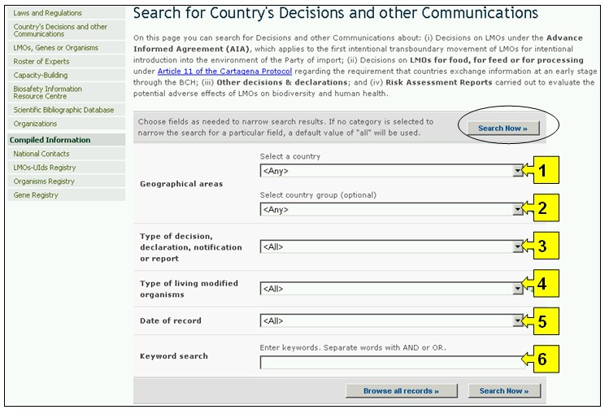
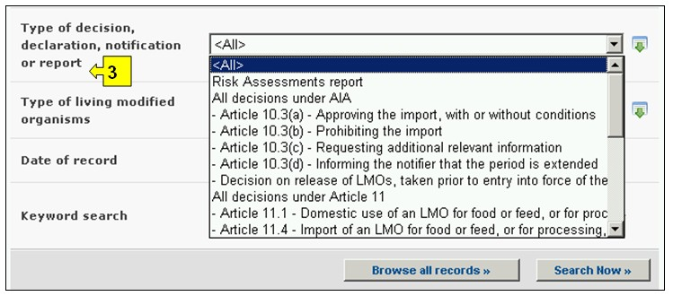
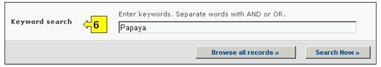
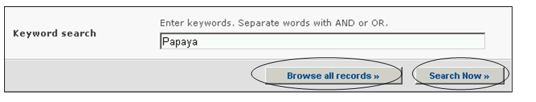

URL: http://bch.cbd.int/database/decisions/
Under the Cartagena Protocol, Parties are responsible for making available through the BCH information regarding their relevant decisions, declarations and other communications.
The search interface for information about Country’s Decisions and other Communication can be accessed from the Finding Information drop down menu on the navigation bar, or from the link in the left hand menu of the Finding Information page, or from the link in the Country’s Decisions and other Communication text on the same page.

Figure 29
This database enables users to search for decisions and other communication related to:
-
Risk Assessments report
-
All decisions under AIA
- Article 10.3(a) - Approving the import, with or without conditions
- Article 10.3(b) - Prohibiting the import
- Article 10.3(c) - Requesting additional relevant information
- Article 10.3(d) - Informing the notifier that the period is extended
- Decision on release of LMOs, taken prior to entry into force of the Protocol -
All decisions under Article 11
- Article 11.1 - Domestic use of an LMO for food or feed, or for processing
- Article 11.4 - Import of an LMO for food or feed, or for processing, taken under domestic framework
- Article 11.6 - Import of an LMO for food or feed, or for processing, taken in the absence of a domestic framework
- Decision on domestic use or import of LMO-FFPs, taken prior to entry into force of the Protocol -
Decision, declaration, notification or report under Articles 6, 13, 14, 17 and 25
- Article 13.1a - Simplified procedure, import at same time as notification
- Article 13.1b - Simplified procedure - imports exempt from AIA
- Article 14.4 - Domestic regulations that apply with respect to specific imports
- Article 17.1 notification - Unintentional transboundary movement
- Article 25.3 notification - Illegal transboundary movements
- Article 6.1 - Transit
- Article 6.2 - Contained use -
Decision on import or release, taken prior to entry into force of the Protocol
-
Declaration made upon ratification or accession
- Field trial not covered by AIA -
Other decision, declaration, notification or report
On the Search for Country’s Decisions and Other Communications page there are six search criteria boxes provided for refining searches in this database. Each of them has a drop down menu from which it is possible to select the required criteria. The default setting for each drop down menu is the first item at the top of the menu list. On the right side of each box, a button allows the user to activate multiple selections. Once in the multiple selection mode it is possible to add more criteria to the selection by clicking on the relevant criteria while pressing the Ctrl (Control) key.

Figure 30
Box 1 [Select a country] lists all the country names in a drop down menu so that users can select one or more specific countries for a search.

Figure 31
Box 2 [Select country group] lists country groups in a drop down menu so that users can select one or more specific groups of countries for a search. The country group list contains all major geographical or political groupings of countries and allows for narrowing the search to records submitted only by the members of the selected group or groups.

Figure 32
Box 3 [Type of decision, declaration, notification or report] lists all types of country decisions and other communications available in the database. This can be used to help narrow the selection to decisions or communication on specific aspects of LMO utilization.

Figure 33
Box 4 [Type of living modified organism] allows the user to apply filters for various aspects of an LMO in order to further narrow the search to records that are specifically related to the selected criteria. Filter categories available are the following: (i) LMOs, identified usually by a Unique Identifier (e.g. MONØØ81Ø-6), (ii) Introduced or Modified Traits (e.g. Glyphosate tolerance), (iii) Gene name (e.g. Cry1A(b)), (iv) Technique Used (e.g. Agrobacterium-mediated), (v) Parental organism common name (e.g. Maize), (vi) Parental organism scientific name (e.g. Zea mays) or (vii) Applicant (free text entry - e.g. Monsanto).
Selecting one or more filter criteria from the drop down menu opens additional search boxes with a drop down menu of options, each related to one of the selected filters. Multiple filters can be added by using the Ctrl (Control) key (i.e. by clicking on the relevant filter criteria while pressing the Ctrl key).

Figure 34
Box 5 [Date of record] allows the user to narrow the search according to the date records have been registered in the BCH. The drop down menu provides a number of options for limiting the search to only those records submitted within the selected interval of timeframe (e.g. ‘last day’, ‘last month’, ‘last year’, etc.).

Figure 35
Box 6 [Keyword search] provides an opportunity for using keywords to narrow the search. The user can use standard keyword syntax (combination of AND / OR operators) to search with multiple words or core parts of words (e.g. “Import OR Export”). A search that is made by using keywords only produces results of records containing exactly the searched text and not possible synonyms that have not been inserted (i.e. a search with the single keyword “Maize” will produce a list of records containing the word “Maize” but not the words “Corn” or “Zea mays”).

Figure 36
The search page offers three buttons to produce a record list. The Search Now button (both at the top and bottom of the search interface) allows the user to activate a search based on the search criteria selected in the search facility boxes. The search results are sorted alphabetically by default according to country name. The Browse all records (at the bottom of the search interface) allows the user to obtain a list of all records in this database.
Searches that identify more than 1000 records are truncated to the first 1000 records produced by the search.

Figure 37
The Search Results pages have a sorting facility above the list of records. This can be used to sort the records according to criteria specific for that category of information. Note that the sorting criteria change when the user selects different search criteria.
Figure 38
Example: A user wishes to identify all the decisions taken by New Zealand under Article 11 of the Protocol. Select New Zealand in the Select a country box. Select All decisions under Article 11 in the Type of decision, declaration, notification or report box. Activate the Search Now button.
The search results are displayed as a list of records. Detailed information about each record can be viewed by selecting the title of the decision (in bold blue type).

Figure 39

Figure 40